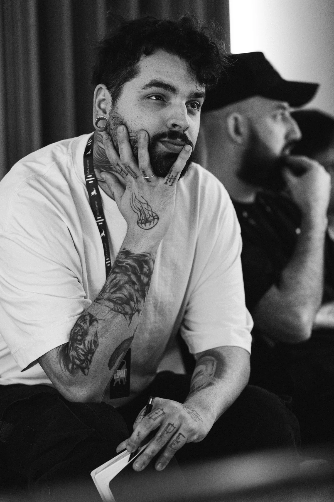
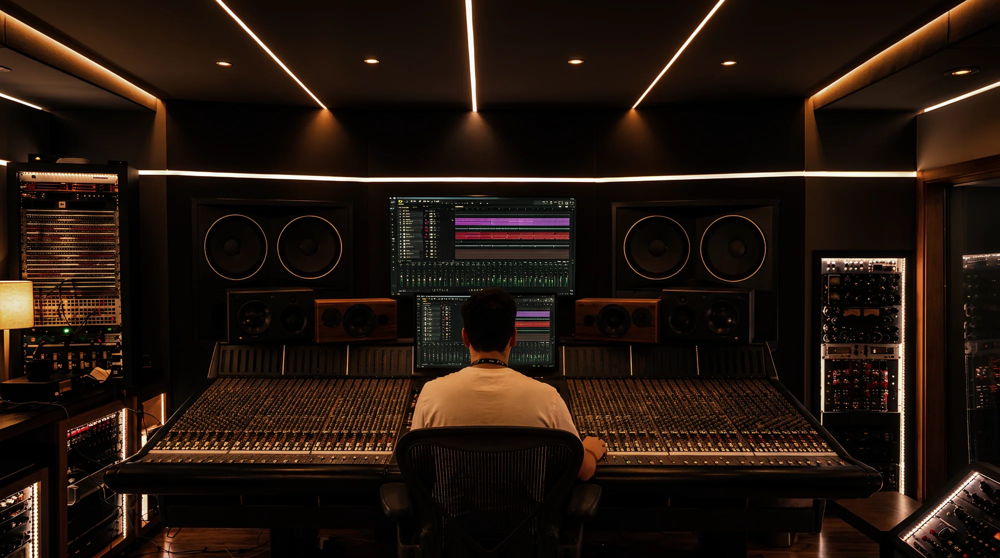

A great mix lets you feel the music.
Not the mix.

Lucas Lus
MIXING & MASTERING ENGINEERAfter more than ten years studying mixing, maybe the biggest lesson has been realizing this work goes far beyond techniques, plugins, or gear.
Before any decision, there's a song trying to say something, and an artist with a very specific idea of what they want to convey.
That's how I try to approach every project: listening closely, understanding what you're going for, and treating your music with the same commitment as the person who wrote it.
My role is to walk alongside you so that, together, we build a track you're genuinely proud of when you hit play.
Verified credits on Muso.ai.
I'm not here to transform your music. I'm here to help your sound tell your story.

Every song already knows where it's going.
My job is to help it get there.
Selected Work